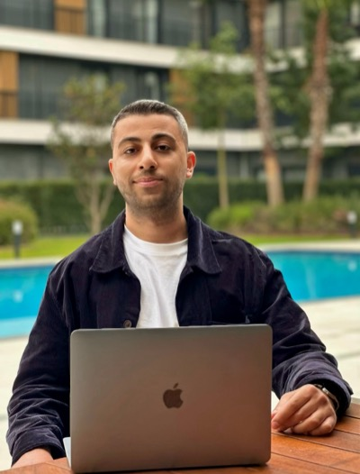

Şenol Yılmaz
1:1 Danışmanlık
Sosyal medyada büyümeni sağlayacak stratejiyi geliştiriyoruz.
1 saatlik birebir online görüşmede sosyal medyada büyümeni engelleyen noktaları analiz edip hedeflerine ulaşman için sana özel net bir yol haritası çıkarıyorum.
Bu danışmanlık kimler için?
Sosyal medyada büyümek isteyen kişisel marka sahipleri
İçerik üreticileri ve influencer adayları
Sosyal medyayı aktif kullanmak isteyen işletmeler
Sıfırdan başlayacak, stratejiye ihtiyaç duyan kişiler
Görüşmede neler yapıyoruz?
İnceliyorum
Görüşme öncesinde profilini ve içeriklerini detaylı şekilde inceliyor, analiz ediyorum.
Değerlendiriyorum
Hesabını, hedeflerini, içeriklerini ve yaşadığın sorunlarını dinliyorum ve değerlendiriyorum.
Analiz ediyorum
Hesabındaki eksikleri, hataları ve gelişmesi gereken alanları belirliyorum.
Yol çiziyorum
Hedeflediğin noktaya ulaşman için neler yapman gerektiğini belirliyorum.
Plan veriyorum
Sana özel, net ve uygulanabilir bir yol haritası sunuyorum.
Görüşme sonunda ne elde edeceksin?
-
Hesabındaki eksikleri daha net görürsün.
-
Nasıl ilerlemen gerektiğini öğrenirsin.
-
İçerik ve büyüme sürecin için net bir yol haritasına sahip olursun.
-
Hedeflerine ulaşmak için somut ve uygulanabilir adımlarla yola çıkarsın.
Danışmanlık için hemen iletişime geç
Sana özel strateji ve yol haritanı birlikte oluşturalım.
WhatsApp'tan BaşvurGörüşme online olarak gerçekleştirilmektedir.